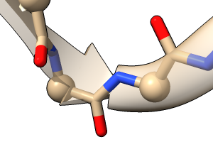
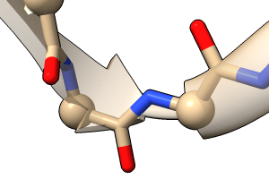

The cartoon or ribbon command shows a simplified backbone representation of the specified biopolymer residues, with additional settings for smoothing and whether a residue's backbone atoms can be shown at the same time as its cartoon segment. These settings can be different for different residues. Changes in settings apply only to the atomic models already present, not subsequently opened models.
The command ~cartoon (or ~ribbon) hides cartoon for the specified residues. The commands hide and show can also be used to control cartoon display. See also: Molecule Display icons
Protein helix and strand assignments are taken from the input structure file. The cartoon path is guided by CA atoms (α-carbons) in peptides and C5' in nucleic acids. The orientation is guided by CA→O (carbonyl oxygen) vectors in peptides and C5'→C1' vectors in nucleic acids. The smooth factor sets the balance between smoothing peptide strands versus following the exact positions of the α-carbons (0.0 unsmoothed, default 1.0 maximally smoothed). Specifying default instead of a numerical value sets the value to 1.0. Smoothing applies only to peptide β-strands, not α-helices, coil, or nucleic acids. Each residue can have a different value of factor, and lower values are recommended where sidechains are displayed, to preclude showing tethers.
By default, showing the cartoon for a residue suppresses the display of its backbone atoms. Simultaneous display can be enabled with hideBackbone false; otherwise, the backbone atoms hidden by cartoons are N, C, and O in amino acids and the phosphate moieties including O5' in nucleic acids.
Subcommands control per-model settings for cartoon shape, size, and the appearance of connections to α-carbons:
A vertical bar “|” designates mutually exclusive options, and default values are indicated with bold. Synonyms for true: True, 1. Synonyms for false: False, 0.
• ( cartoon | ribbon ) arrow model-spec [ helix true | false ] [ strand true | false ]Arrowheads can be shown at the C-terminal ends of peptide helix (default false) and/or strand (default true). Given without options, cartoon arrow reports the current settings.• ( cartoon | ribbon ) linker model-spec ( none | short | short2 | long ) type,type
Linkers are the connections between helix, strand, and coil segments along a peptide chain. The options specify the length and register of coil-like segments between the last residue of one segment and first residue of the next:• ( cartoon | ribbon ) scale model-spec [ helix w,h] [ strand w,h] [ coil w,h] [ nucleic h,w] [ arrowHelix basew,baseh,tipw,tiph ] [ arrowStrand basew,baseh,tipw,tiph ]Segment type values helix, strand, and coil can be given as single letters, for example:
- none - no extra (other than for coil residues) coil-like linker; boundary occurs at peptide bond
- short - extra coil-like linker from the Cα of the last residue in a segment to the peptide bond
- short2 - extra coil-like linker from the peptide bond to the Cα of the first residue of the next segment
- long - extra coil-like segment from the Cα of the last residue in a segment to the Cα of the first residue in the next segment (like short + short2)
cartoon link long h,s; cartoon link long s,hIn the following example images, a strand immediately precedes a helix, and α-carbons are shown as balls.
none short short2 long  
The scale subcommand sets the dimensions of the cartoon perpendicular to its path. The values are actually half-dimensions (half-widths and half-heights) in Å. Dimensions can be set separately for peptide helix (default 0.9,0.21) and the arrow (if any) on its C-terminal end (default 1.8,0.21,0.21,0.21), peptide strand (default 0.8,0.21) and the arrow (if any) on its C-terminal end (default 1.5,0.21,0.21,0.21), peptide coil (default 0.21,0.21), and nucleic acids (default 0.21,0.8).• ( cartoon | ribbon ) tether model-spec [ shape cone | steeple | cylinder ] [ sides N ] [ scale scale ] [ opacity opacity ]Given without options, cartoon scale reports the current settings.
• ( cartoon | ribbon ) xsection model-spec [ helix round | square | piping ] [ strand round | square | piping ] [ coil round | square | piping ] [ nucleic round | square | piping ]A tether is drawn between a displayed α-carbon (CA atom) and the corresponding cartoon segment where they are offset (path-smoothing factor > 0). Tether shape can be:
The sides option controls the number of planar facets used to draw a tether (range 3-10, default 4). The scale option sets tether base radius relative to the display radius of the corresponding α-carbon (range 0.0-1.0, default 1.0). The tether opacity value (1 – transparency) can range from 0.0 (completely transparent) to 1.0 (completely opaque) and defaults to 0.5. The tether color tracks the color of the corresponding α-carbon.
- cone (default) - cone with base at the α-carbon, point at the cartoon
- steeple - cone with base at the cartoon, point at the α-carbon
- cylinder
The cross-section is the shape of the cartoon perpendicular to its path, with edges smoothly rounded, squared-off, or piped (edges rounded but thicker than the middle). Cross-sections can be set separately for peptide helix (default round), peptide strand (default square), peptide coil (default round), and nucleic acids (default round).Given without options, cartoon xsection reports the current settings.